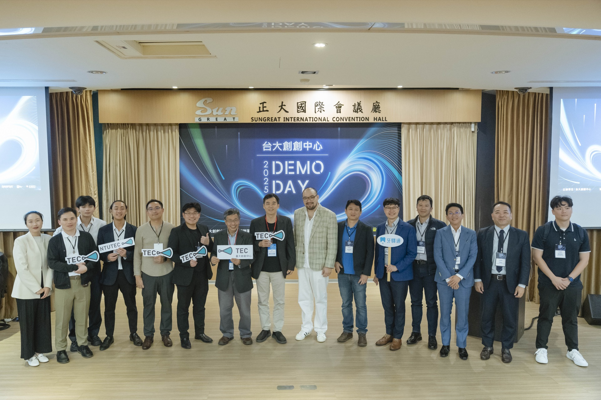
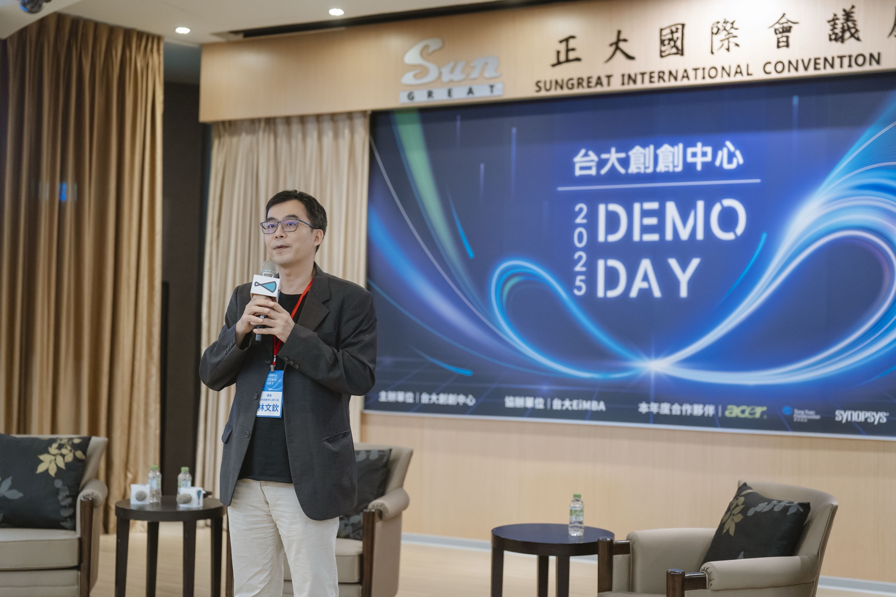
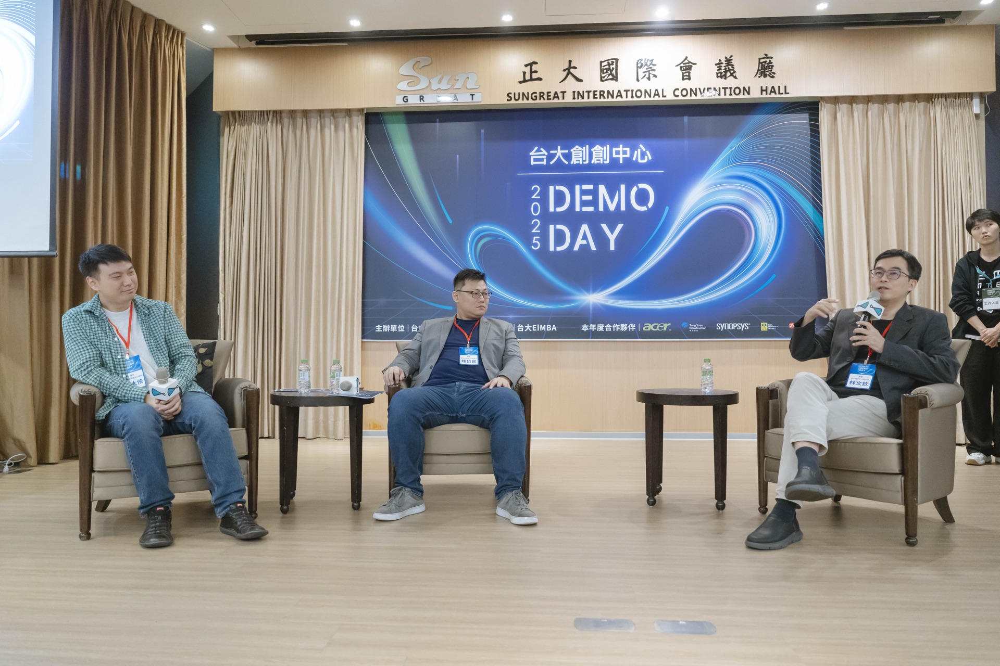

<!DOCTYPE html>
<html lang="zh-TW">
<head>
  <meta charset="UTF-8">
  <meta name="viewport" content="width=device-width, initial-scale=1.0">
  <title>Demo Day 年度路演日 — 台大創創中心 NTUTEC</title>
  <link rel="preconnect" href="https://fonts.googleapis.com">
  <link rel="preconnect" href="https://fonts.gstatic.com" crossorigin>
  <link href="https://fonts.googleapis.com/css2?family=Noto+Sans+TC:wght@300;400;500;600;700&family=Lato:wght@100;300;400;700;900" rel="stylesheet">
  <script src="https://unpkg.com/react@18.3.1/umd/react.development.js" integrity="sha384-hD6/rw4ppMLGNu3tX5cjIb+uRZ7UkRJ6BPkLpg4hAu/6onKUg4lLsHAs9EBPT82L" crossorigin="anonymous"></script>
  <script src="https://unpkg.com/react-dom@18.3.1/umd/react-dom.development.js" integrity="sha384-u6aeetuaXnQ38mYT8rp6sbXaQe3NL9t+IBXmnYxwkUI2Hw4bsp2Wvmx4yRQF1uAm" crossorigin="anonymous"></script>
  <script src="https://unpkg.com/lucide-react@0.474.0/dist/umd/lucide-react.js" crossorigin="anonymous"></script>
  <script src="https://unpkg.com/@babel/standalone@7.29.0/babel.min.js" integrity="sha384-m08KidiNqLdpJqLq95G/LEi8Qvjl/xUYll3QILypMoQ65QorJ9Lvtp2RXYGBFj1y" crossorigin="anonymous"></script>
  <style>
    *, *::before, *::after { box-sizing: border-box; margin: 0; padding: 0; }
    :root {
      --navy: #1A2E4A; --teal: #58A8A0; --mint: #00D8C8;
      --white: #FAFAF8; --offwhite: #F7F5F1; --rule: #E0E0DC;
      --text: #1A1A18; --muted: #6C727B;
      --serif: 'Noto Sans TC', sans-serif; --mono: 'Lato', sans-serif; --sans: 'Lato', 'Noto Sans TC', sans-serif; --italic: 'Cormorant Garamond', Georgia, serif;
    }
    html { scroll-behavior: smooth; overflow-x: hidden; max-width: 100vw; }
    body { font-family: var(--sans); background: var(--offwhite); color: var(--text); overflow-x: hidden; max-width: 100vw; }
    a { color: inherit; text-decoration: none; }
    ::selection { background: var(--mint); color: var(--navy); }
    .sec-en { font-family: var(--mono); font-size: 11px; font-weight: 500; letter-spacing: 0.14em; color: var(--teal); text-transform: uppercase; display: block; margin-bottom: 12px; }
    .sec-title-hl { font-family: var(--serif); font-weight: 600; line-height: 1.4; color: var(--navy); display: inline; background: var(--mint); box-decoration-break: clone; -webkit-box-decoration-break: clone; padding: 4px 10px; }
  </style>
</head>
<body>
<div id="root"></div>
<script type="text/babel" src="shared.js?v=2"></script>
<script type="text/babel">
const { useState, useEffect, useRef } = React;

function useInView(opts = {}) {
  const ref = useRef(null);
  const [v, setV] = useState(false);
  useEffect(() => {
    const obs = new IntersectionObserver(([e]) => { if (e.isIntersecting) { setV(true); obs.disconnect(); } }, { threshold: opts.threshold || 0.12 });
    if (ref.current) obs.observe(ref.current);
    return () => obs.disconnect();
  }, []);
  return [ref, v];
}

function AnimUp({ children, delay = 0, style = {} }) {
  const [ref, v] = useInView();
  return <div ref={ref} style={{ opacity: v ? 1 : 0, transform: v ? 'none' : 'translateY(28px)', transition: `opacity 0.7s cubic-bezier(0.22,1,0.36,1) ${delay}ms, transform 0.7s cubic-bezier(0.22,1,0.36,1) ${delay}ms`, ...style }}>{children}</div>;
}

const STATS_2025 = [
  { value: '74', unit: '位', label: '投資人到場', sub: 'VC 44 位 + 天使 30 位' },
  { value: '51', unit: '件', label: '媒合意向', sub: '現場直接促成' },
  { value: '356', unit: '人', label: '報名參加', sub: '233 人到場出席' },
  { value: '9.06', unit: '/10', label: '活動滿意度', sub: '51 份現場問卷' },
];

const PITCH_ITEMS = [
  { num: '14', title: '組新創路演', desc: 'NTUTEC 11 組 + 鳥巢 / EiMBA 3 組' },
  { num: '15', title: '個互動攤位', desc: '新創與投資人一對一深度交流' },
  { num: '2', title: '大競賽獎項', desc: '最佳創業簡報獎 · 最具投資價值獎' },
];

const YEAR_HISTORY = ['2022', '2023', '2024（2屆）', '2025', '2026（預計）'];

const CTAS = [
  { label: 'For Startups', title: '我是新創團隊', desc: '想在 Demo Day 向投資人 Pitch？每年 10 月截止收件，先申請輔導計畫、通過 Gate 審核，即可獲得舞台。', href: 'apply.html', cta: '申請輔導計畫', primary: true },
  { label: 'For Investors', title: '我是投資人', desc: '想出席下一屆 Demo Day？名額有限，採邀請制。歡迎聯繫我們取得出席邀請。', href: 'angels.html', cta: '申請天使入會', primary: false },
  { label: 'For Enterprises', title: '企業贊助洽詢', desc: '想共同主辦 Demo Day 或企業垂直加速器？我們提供冠名、攤位與論壇講台，直接對接 600+ 校友新創生態。', href: 'corporate-partners.html', cta: '了解企業合作', primary: false },
];

function Hero() {
  const [loaded, setLoaded] = useState(false);
  const isMobile = useIsMobile();
  useEffect(() => { const t = setTimeout(() => setLoaded(true), 80); return () => clearTimeout(t); }, []);

  return (
    <div style={{ position: 'relative' }}>
      <section style={{ position: 'relative', background: 'var(--offwhite)', overflow: 'hidden', minHeight: isMobile ? 480 : 720 }}>
        <div style={{ position: 'absolute', inset: 0, clipPath: isMobile ? 'none' : 'polygon(0% 22%, 27% 0%, 100% 0%, 100% 78%, 73% 100%, 0% 100%)' }}>
          <div style={{ position: 'absolute', inset: 0, background: 'var(--navy)' }} />
          <div style={{ position: 'absolute', inset: 0, backgroundImage: 'url(images/events/demo-day-2025-group.jpg)', backgroundSize: 'cover', backgroundPosition: '50% 30%', backgroundRepeat: 'no-repeat', opacity: 0.85 }} />
          <div style={{ position: 'absolute', inset: 0, background: 'linear-gradient(to top right, rgba(26,46,74,0.90) 0%, rgba(88,168,160,0.50) 35%, transparent 70%)' }} />
        </div>
        <svg style={{ position: 'absolute', inset: 0, width: '100%', height: '100%', pointerEvents: 'none', zIndex: 3 }} viewBox="0 0 1200 720" preserveAspectRatio="none">
          <polygon points="0,0 324,0 0,160" fill="#F7F5F1" />
          <polygon points="1200,720 876,720 1200,560" fill="#F7F5F1" />
        </svg>
        <div style={{ position: 'relative', zIndex: 2, maxWidth: 1280, margin: '0 auto', padding: isMobile ? '100px 6% 56px' : '188px 10% 120px' }}>
          <div style={{ opacity: loaded ? 1 : 0, transition: 'opacity 0.65s 0.1s', fontFamily: 'var(--mono)', fontSize: 11, letterSpacing: '0.18em', color: 'var(--mint)', textTransform: 'uppercase', marginBottom: 24 }}>Annual Demo Day</div>
          <h1 style={{ opacity: loaded ? 1 : 0, transition: 'opacity 0.65s 0.2s', fontFamily: 'var(--sans)', fontSize: isMobile ? 36 : 58, fontWeight: 600, lineHeight: 1.12, color: '#fff', marginBottom: 28 }}>Demo Day<br />年度路演日</h1>
          <p style={{ opacity: loaded ? 1 : 0, transition: 'opacity 0.65s 0.3s', fontFamily: 'var(--serif)', fontSize: isMobile ? 15 : 16, fontWeight: 300, lineHeight: 2.05, color: 'rgba(255,255,255,0.84)', maxWidth: 520 }}>台大校園年度最大新創投資媒合活動，精選新創與投資人面對面，7 屆持續創下新高。</p>
          {!isMobile && (
            <div style={{ opacity: loaded ? 1 : 0, transition: 'opacity 0.65s 0.5s', display: 'flex', gap: 16, marginTop: 40 }}>
              <a href="apply.html" style={{ display: 'inline-block', background: 'var(--mint)', color: 'var(--navy)', fontFamily: 'var(--serif)', fontWeight: 600, fontSize: 14, padding: '12px 28px', borderRadius: 2 }}>申請輔導計畫</a>
              <a href="angels.html" style={{ display: 'inline-block', background: 'transparent', color: '#fff', fontFamily: 'var(--serif)', fontSize: 14, padding: '12px 28px', borderRadius: 2, border: '1px solid rgba(255,255,255,0.3)' }}>投資人出席</a>
            </div>
          )}
        </div>
      </section>
    </div>
  );
}

function Stats2025() {
  const isMobile = useIsMobile();
  return (
    <section style={{ padding: isMobile ? '72px 0' : '0', background: 'var(--offwhite)' }}>
      <div style={{ maxWidth: 1280, margin: '0 auto', padding: isMobile ? '0 6%' : '0 10%' }}>
        <AnimUp style={{ marginBottom: isMobile ? 36 : 48, paddingTop: isMobile ? 0 : 80 }}>
          <span className="sec-en">2025 Demo Day 成果</span>
          <h2 style={{ display: 'inline-block' }}>
            <span className="sec-title-hl" style={{ fontSize: isMobile ? 26 : 32 }}>7 屆最高紀錄</span>
          </h2>
          <p style={{ fontFamily: 'var(--serif)', fontSize: 14, fontWeight: 300, lineHeight: 1.9, color: 'var(--muted)', marginTop: 12 }}>2025 年 12 月 10 日，正大講堂 & 國學講堂（台大校內），創下 7 屆以來多項最高紀錄。</p>
        </AnimUp>
        <div style={{ display: 'grid', gridTemplateColumns: isMobile ? 'repeat(2, 1fr)' : 'repeat(4, 1fr)', gap: 1, background: 'var(--rule)', marginBottom: isMobile ? 0 : 80 }}>
          {STATS_2025.map((s, i) => (
            <AnimUp key={i} delay={i * 80} style={{ height: '100%' }}>
              <div style={{ background: '#fff', padding: isMobile ? '24px 20px' : '40px 32px', textAlign: 'center', height: '100%' }}>
                <div style={{ display: 'flex', alignItems: 'baseline', justifyContent: 'center', gap: 2, marginBottom: 8 }}>
                  <span style={{ fontFamily: 'Georgia, serif', fontStyle: 'italic', fontWeight: 600, fontSize: isMobile ? 32 : 44, color: 'var(--navy)' }}>{s.value}</span>
                  <span style={{ fontFamily: 'var(--serif)', fontWeight: 600, fontSize: 16, color: 'var(--teal)', marginLeft: 3 }}>{s.unit}</span>
                </div>
                <p style={{ fontFamily: 'var(--sans)', fontSize: 14, fontWeight: 600, color: 'var(--text)', marginBottom: 4 }}>{s.label}</p>
                <p style={{ fontFamily: 'var(--mono)', fontSize: 10, color: 'var(--muted)' }}>{s.sub}</p>
              </div>
            </AnimUp>
          ))}
        </div>
      </div>
    </section>
  );
}

function EventStructure() {
  const isMobile = useIsMobile();
  return (
    <section style={{ padding: isMobile ? '72px 0' : '120px 0', background: '#fff' }}>
      <div style={{ maxWidth: 1280, margin: '0 auto', padding: isMobile ? '0 6%' : '0 10%' }}>
        <div style={{ display: 'grid', gridTemplateColumns: isMobile ? '1fr' : '1fr 1fr', gap: isMobile ? 48 : 80 }}>
          <AnimUp>
            <span className="sec-en">Event Structure</span>
            <h2 style={{ display: 'inline-block', marginBottom: 24 }}>
              <span className="sec-title-hl" style={{ fontSize: isMobile ? 28 : 36 }}>活動架構</span>
            </h2>
          </AnimUp>
          <AnimUp delay={100}>
            <div style={{ marginBottom: 40 }}>
              <span style={{ display: 'inline-block', background: 'var(--teal)', color: '#fff', fontFamily: 'var(--sans)', fontSize: 13, fontWeight: 600, padding: '4px 16px', borderRadius: 16, marginBottom: 24 }}>新創 Pitch 舞台</span>
              <div style={{ display: 'flex', flexDirection: 'column', gap: 16 }}>
                {PITCH_ITEMS.map((item, i) => (
                  <div key={i} style={{ display: 'flex', alignItems: 'flex-start', gap: 16 }}>
                    <span style={{ width: 36, height: 36, borderRadius: '50%', background: 'rgba(88,168,160,0.12)', display: 'flex', alignItems: 'center', justifyContent: 'center', fontFamily: 'var(--sans)', fontSize: 13, fontWeight: 600, color: 'var(--teal)', flexShrink: 0 }}>{item.num}</span>
                    <div>
                      <p style={{ fontFamily: 'var(--serif)', fontSize: 16, fontWeight: 600, color: 'var(--navy)', marginBottom: 4 }}>{item.title}</p>
                      <p style={{ fontFamily: 'var(--sans)', fontSize: 13, color: 'var(--muted)' }}>{item.desc}</p>
                    </div>
                  </div>
                ))}
              </div>
            </div>
            <div style={{ borderTop: '1px solid var(--rule)', paddingTop: 32 }}>
              <span style={{ display: 'inline-block', background: 'var(--teal)', color: '#fff', fontFamily: 'var(--sans)', fontSize: 13, fontWeight: 600, padding: '4px 16px', borderRadius: 16, marginBottom: 24 }}>產業論壇</span>
              <div style={{ display: 'flex', flexDirection: 'column', gap: 12 }}>
                {[
                  { label: '2025 論壇主題', value: '「創業 x AI：加速、放大、重新定義」' },
                  { label: '共同主辦', value: 'EiMBA 創業創新 · 台大鳥巢' },
                  { label: '特邀講者', value: '鍾哲民 · 史大俠' },
                ].map((item, i) => (
                  <div key={i} style={{ display: 'flex', gap: 12 }}>
                    <span style={{ fontFamily: 'var(--sans)', fontSize: 13, fontWeight: 600, color: 'var(--text)', whiteSpace: 'nowrap' }}>{item.label}</span>
                    <span style={{ fontFamily: 'var(--serif)', fontSize: 13, fontWeight: 300, color: 'var(--muted)' }}>{item.value}</span>
                  </div>
                ))}
              </div>
            </div>
          </AnimUp>
        </div>
      </div>
    </section>
  );
}

function PhotoGallery() {
  const isMobile = useIsMobile();
  return (
    <section style={{ padding: isMobile ? '72px 0' : '120px 0', background: 'var(--offwhite)' }}>
      <div style={{ maxWidth: 1280, margin: '0 auto', padding: isMobile ? '0 6%' : '0 10%' }}>
        <AnimUp style={{ marginBottom: isMobile ? 36 : 48, textAlign: 'right' }}>
          <span className="sec-en" style={{ display: 'flex', justifyContent: 'flex-end' }}>2025 現場紀實</span>
          <h2 style={{ display: 'inline-block' }}>
            <span className="sec-title-hl" style={{ fontSize: isMobile ? 28 : 36 }}>Demo Day 現場</span>
          </h2>
        </AnimUp>
        <div style={{ display: 'grid', gridTemplateColumns: isMobile ? '1fr' : '2fr 1fr', gap: 12, marginBottom: 12 }}>
          <div style={{ borderRadius: 4, overflow: 'hidden', height: isMobile ? 220 : 360 }}>
            
          </div>
          <div style={{ borderRadius: 4, overflow: 'hidden', height: isMobile ? 220 : 360 }}>
            
          </div>
        </div>
        <div style={{ display: 'grid', gridTemplateColumns: isMobile ? '1fr' : '1fr 1fr', gap: 12 }}>
          <div style={{ borderRadius: 4, overflow: 'hidden', height: isMobile ? 180 : 280 }}>
            
          </div>
          <div style={{ borderRadius: 4, overflow: 'hidden', height: isMobile ? 180 : 280 }}>
            
          </div>
        </div>
      </div>
    </section>
  );
}

function History() {
  const isMobile = useIsMobile();
  return (
    <section style={{ padding: isMobile ? '72px 0' : '120px 0', background: 'var(--teal)' }}>
      <div style={{ maxWidth: 1280, margin: '0 auto', padding: isMobile ? '0 6%' : '0 10%', textAlign: 'center' }}>
        <AnimUp style={{ marginBottom: 40 }}>
          <span className="sec-en" style={{ color: 'rgba(255,255,255,0.65)', justifyContent: 'center', display: 'flex' }}>Our History</span>
          <h2 style={{ display: 'inline-block' }}>
            <span style={{ fontFamily: 'var(--serif)', fontWeight: 600, lineHeight: 1.4, color: '#fff', display: 'inline', background: 'var(--navy)', boxDecorationBreak: 'clone', WebkitBoxDecorationBreak: 'clone', padding: '4px 10px', fontSize: isMobile ? 28 : 36 }}>7 屆持續成長</span>
          </h2>
        </AnimUp>
        <p style={{ fontFamily: 'var(--serif)', fontSize: 15, fontWeight: 300, lineHeight: 1.9, color: 'rgba(255,255,255,0.85)', maxWidth: 640, margin: '0 auto 40px' }}>自 2022 年起連續舉辦，7 屆逐年成長。2025 年 Accupass 瀏覽 9,775 次，創近 7 屆最高。下一屆預計於 2026 年 12 月舉辦。</p>
        <div style={{ display: 'flex', flexWrap: 'wrap', justifyContent: 'center', gap: 12 }}>
          {YEAR_HISTORY.map((y, i) => (
            <AnimUp key={i} delay={i * 60}>
              <span style={{ display: 'inline-block', background: 'rgba(255,255,255,0.15)', color: '#fff', fontFamily: 'var(--sans)', fontSize: 14, fontWeight: 500, padding: '8px 20px', borderRadius: 20, border: '1px solid rgba(255,255,255,0.3)' }}>{y}</span>
            </AnimUp>
          ))}
        </div>
      </div>
    </section>
  );
}

function ThreeWayCTA() {
  const isMobile = useIsMobile();
  return (
    <section style={{ padding: isMobile ? '48px 6%' : '80px 10%', background: 'var(--offwhite)' }}>
      <div style={{ maxWidth: 1280, margin: '0 auto' }}>
        <AnimUp style={{ marginBottom: isMobile ? 32 : 48 }}>
          <span className="sec-en">Get Involved</span>
          <h2 style={{ display: 'inline-block' }}>
            <span className="sec-title-hl" style={{ fontSize: isMobile ? 26 : 32 }}>如何參與 Demo Day</span>
          </h2>
        </AnimUp>
        <div style={{ display: 'grid', gridTemplateColumns: isMobile ? '1fr' : 'repeat(3, 1fr)', gap: 1, background: 'var(--rule)' }}>
          {CTAS.map((c, i) => (
            <AnimUp key={i} delay={i * 80} style={{ height: '100%' }}>
              <div style={{ background: '#fff', padding: isMobile ? '32px 24px' : '48px 40px', height: '100%' }}>
                <p style={{ fontFamily: 'var(--mono)', fontSize: 10, letterSpacing: '0.16em', color: 'var(--muted)', textTransform: 'uppercase', marginBottom: 16 }}>{c.label}</p>
                <h3 style={{ fontFamily: 'var(--serif)', fontSize: 22, fontWeight: 600, color: 'var(--navy)', marginBottom: 16 }}>{c.title}</h3>
                <p style={{ fontFamily: 'var(--serif)', fontSize: 14, fontWeight: 300, lineHeight: 1.9, color: 'var(--muted)', marginBottom: 32 }}>{c.desc}</p>
                <a href={c.href} style={{ display: 'inline-block', background: c.primary ? 'var(--teal)' : 'transparent', color: c.primary ? '#fff' : 'var(--navy)', fontFamily: 'var(--serif)', fontWeight: 600, fontSize: 14, padding: '12px 24px', borderRadius: 2, border: c.primary ? 'none' : '1px solid var(--rule)' }}>{c.cta}</a>
              </div>
            </AnimUp>
          ))}
        </div>
      </div>
    </section>
  );
}

function Page() {
  const isMobile = useIsMobile();
  return (
    <div style={{ maxWidth: '100vw', overflowX: 'hidden' }}>
      <SharedNav activeKey="台大天使會" />
      <SharedSocialSidebar />
      <main style={{ paddingRight: isMobile ? 0 : 80 }}>
        <Hero />
        <Stats2025 />
        <EventStructure />
        <PhotoGallery />
        <History />
        <ThreeWayCTA />
      </main>
      <div style={{ paddingRight: isMobile ? 0 : 80 }}>
        <SharedFooter />
      </div>
    </div>
  );
}

ReactDOM.createRoot(document.getElementById('root')).render(<Page />);
</script>
</body>
</html>
